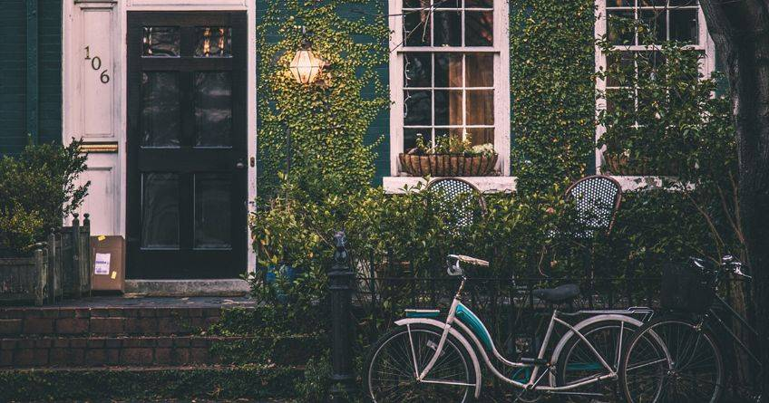
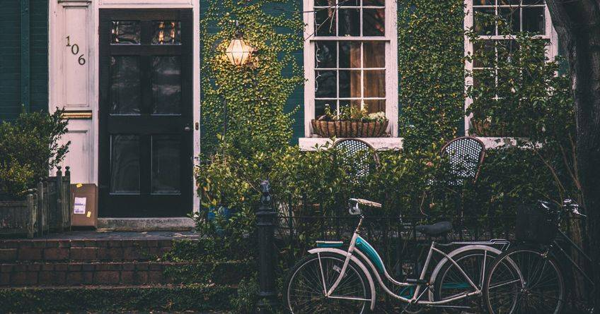

Как навести порядок в доме за 28 дней - Страна Флаймамия — LiveJournal
2020.10.11 01:02

LiveJournal Интересное Сообщества RSS трансляции Магазин ⭐️ iOS & Android Помощь Войти Войти СОЗДАТЬ БЛОГ СОЗДАТЬ Русский (ru) English (en) Русский (ru) Українська (uk) Français (fr) Português (pt) español (es) Deutsch (de) Italiano (it) Беларуская (be) strana_flymamia —
Войти
Нет аккаунта? Зарегистрироваться Facebook Twitter Google Rambler/Авторизуясь в LiveJournal с помощью стороннего сервиса вы принимаете условия Пользовательского соглашения LiveJournal
Нет аккаунта? Зарегистрироваться Recent Entries Archive Friends Profile Memories Страна ФлаймамияPrevious Entry | Next Entry
Как навести порядок в доме за 28 дней
Mar. 2nd, 2013 at 4:55 PMstrana_flymamia olga_krav4enko
Скоро весна! Значит пора вздохнуть поглубже. Чувствуете, что нечем дышать? ПЫЛЬ!!!
Итак генеральная уборка ужасает своими масштабами...сразу опускается одна рука, потом вторая.... И глаза хочется закрыть, чтоб не видеть всего хлама....
Надо разбить задачу на пункты. Вот, что предлагает Оксана Добрикова:
[ Неделя первая... ] Неделя 1.
День 1 (и ежедневно).
• Заправить постель.
• Подмести полы.
• Помыть обеденный стол и поверхности рабочих столов на кухне.
• Помыть посуду.
• Навести порядок в комнатах.
• Рассортировать почту, выбросить ненужное.
• Идея для экономии времени: поставьте корзину, куда складывайте все вещи, которые должны находиться в других комнатах, затем разнесите их все по местам.
День 2. Гостиная (часть 1).
• Разложить видеокассеты, CD, DVD по коробочкам.
• Отчистить от пятен кресла, диван, ковер.
• Взбить и перевернуть подушки, расправить уголки.
• Ровно сложить газеты и журналы.
• Отчистить от пятен и протереть от пыли мебель.
• Пропылесосить или подмести пол.
• Идея для экономии времени: мойте пол по часовой стрелке, двигаясь от двери.
День 3. Борьба с барахлом.
• Разобрать полки и ящики, отобрав нужное и выкинув мусор.
• Собрать в одну емкость одинаковые предметы: ручки, пакеты, марки и т.д.
• Использовать небольшие коробки или корзинки для хранения этих мелочей.
• Дать детям пять минут, чтобы они разобрали барахло в своей комнате… Добавить еще пять минут.
День 4. Кабинет.
• Навести порядок в счетах, сгруппировать их по категориям.
• Вытащить старые бумаги из файловых папок или ящиков стола.
• Разложить по отдельным файловым папкам счета, руководства пользователя, гарантийные талоны и рецепты.
• Пополнить запасы марок, конвертов, скрепок, ручек и сложить все в ящик стола.
• Идея для экономии времени: получив почту, сразу извлекайте из конвертов содержимое, а сами конверты и рекламные приложения выбрасывайте.
День 5. Книги.
• Отобрать \"макулатуру\" – те книги, которые никогда не будете читать, избавьтесь от них – отнесите в библиотеку, в детский сад или же просто выбросите.
• Протрите полки.
• Расставьте книги в соответствии с вашими представлениями о библиотеке – в алфавитном порядке, по жанрам или по росту.
День 6-7 (выходные). Атака на антресоли.
• Навести порядок, группируя схожие предметы.
• Провести мини-инвентаризацию, подписать коробки.
• Разложить вещи в три коробки: на выброс, для передачи в благотворительную организацию, на продажу.
• Подмести или пропылесосить пол.
• Составить список вещей, нуждающихся в ремонте.
[ Неделя вторая... ] Неделя 2.
День 8. Гостиная (часть 2).
• Пройтись по комнате с корзиной или коробкой и собрать в нее все лишние вещи.
• Поставить ровно предметы на каминной полке, на кофейном столике.
• Отчистить поверхности от пятен и протереть их от пыли.
• Протереть зеркала, стекла и экран телевизора влажным бумажным полотенцем.
• Взбить и поправить диванные подушки.
• Пропылесосить или помыть пол.
• Идея для экономии времени: используйте пылесос, чтобы вытереть пыль с плафонов лампы.
День 9. Столовая.
• Очистить стол от ненужных вещей, скопившихся на нем, а затем протереть пыль.
• Помыть посуду и вазы, после чего отправить их по "месту постоянной прописки".
• Использовать пятновыводитель, чтобы вывести пятна с обивки стульев.
• Протереть все стеклянные дверцы, зеркала, окна с помощью влажного бумажного полотенца.
• Пропылесосить или помыть пол.
• Идея для экономии времени: удаляйте царапины с деревянных поверхностей мебели с помощью специальных средств.
День 10. Ванная комната.
• Разобрать заставленные поверхности, протереть пыль.
• Использовать хороший очиститель, чтобы промыть раковину, ванну, душевую кабину.
• Постирать полотенца.
• Идея для экономии времени: начните работу в ванной с того, что нанесите средство для чистки на сантехнику и стены, после чего займитесь остальными пунктами из списка, дав средству время сделать свое дело.
День 11. Домашние растения.
• Перенести те растения, которые можно поднять, на кухню или в ванну.
• Удалить (оторвать или отрезать) засохшие листья и соцветия.
• Стереть пыль сухой или влажной тряпочкой с листьев.
• Полить (можно устроить душ, поливая растения прохладной водой) и удобрить растения в соответствии с их потребностями.
• Протереть пыль или промыть место, где стоят цветы, и вернуть их обратно.
День 12. Спальня.
• Открыть форточку для проветривания.
• Собрать одежду, накопившуюся в комнате, развесить в шкафах.
• Разнести вещи по своим местам.
• Протереть зеркало и стекла.
• Протереть пыль на мебели и плинтусах.
• Сменить постельное белье и взбить подушки.
• Пропылесосить или помыть пол.
День 13-14 (выходные). Гардероб.
• Очистить пол и вывалить на него все содержимое шкафа.
• Разобрать одежду и обувь, выделив то, что не будет носиться.
• Отобрать пустые вешалки.
• Сложить в пакет вещи, нуждающиеся в чистке.
• Стереть пыль с полок, развесить оставшуюся одежду, пропылесосить пол.
• Идея для экономии времени: развесьте оставшиеся вещи, группируя их или по готовым комплектам или по виду: юбки, брюки, блузки…
[ Неделя третья... ] Неделя 3.
День 15. Кулинарные книги и рецепты.
• Собрать все имеющиеся вырезки, кулинарные книги в одно место на кухне.
• Просмотреть книги и унести те, которыми редко пользуетесь, в другой шкаф.
• Выбросить неполные рецепты или те, которые уже опробованы и блюда никому не понравились.
• Наклеить оставшиеся рецепты на листы бумаги и вложить их в файловые папочки, чтобы собрать в одну папку на кольцах.
• Просмотреть рецепты, составить меню на ближайшие две-три недели и приготовить список продуктов для закупки.
• Идея для экономии времени: группируйте рецепты по принципу основного продукта – каши, мясо, рыба.
День 16. Холодильник.
• Выбросить продукты, срок годности которых закончился, избавиться от несвежих овощей и фруктов.
• Протереть стенки, дверцу, ящички, полочки.
• Сгруппировать одинаковые продукты, пополнить запасы, не забыть проверить пластиковые контейнеры для варенья и приправ.
• Идея для экономии времени: займитесь уборкой в холодильнике до того, как составите список продуктов для закупки.
День 17. Морозилка.
• Сделать скорый обзор имеющихся запасов, перегруппировать продукты, сложив однотипные вместе – мясо, овощи, птица.
• Попутно проверить срок годности, чтобы уже просроченные выбросить, а те, что чуть "помоложе", положить поближе, чтобы использовать в ближайшее время.
• Отмыть пятна с внешней стороны, не забыть о верхней части холодильника.
• Идея для экономии времени: составьте список имеющихся продуктов, повесьте его на холодильник, чтобы знать, когда нужно пополнять запасы и когда их расходовать.
День 18. Кладовка, или Запасы.
• Проверить долгохранящиеся продукты и специи, выбросить те, срок годности которых истек.
• Сгруппировать оставшиеся по типу или же расставить в алфавитном порядке.
• Использовать несмывающийся маркер, чтобы надписать срок годности на крышках.
• Протереть полки и выровнять их (если необходимо).
• Пополнить запасы.
• Идея для экономии времени: расставляйте банки в один ряд и один слой, чтобы было хорошо видно каждую.
День 19. Календарь на дверце холодильника.
• Проверить бумажки с напоминаниями, выбросить ненужные и пересортировать оставшиеся, группируя по событиям или по домочадцам.
• Проверить календарь, чтобы написать новые напоминания о событиях текущего и следующего месяцев.
• При необходимости купить дополнительные магниты.
День 20-21 (выходные). Кухня.
• Как следует промыть поверхности рабочих столов.
• Проверить содержимое шкафчиков и ящиков, чтобы оценить порядок, при необходимости навести порядок.
• Оттереть пятна на мебели, стенах, полках, выключателе.
• Пропылесосить или вымыть пол.
• Стереть пыль с плинтусов и ножек тумб.
• Протереть поверхности микроволновки, плиты, тостера.
[ Неделя четвертая... ] Неделя 4.
День 22. Детская.
• Поставить на пол корзину или коробку и сложить туда одежду, из которой дети выросли.
• Протереть стеклянные и зеркальные поверхности влажным бумажным полотенцем.
• Стереть пыль с мебели и пропылесосить или помыть пол.
• Помочь детям разложить их вещи в нужном и удобном порядке.
• Идея для экономии времени: введите строжайшее правило: НИКАКОЙ ЕДЫ В КОМНАТЕ.
День 23. Игрушки.
• Сгруппировать игрушки по категориям: конструкторы, куклы, настольные игры, паззлы.
• Выбросить сломанные игрушки.
• Отложить те игрушки, из которых дети уже выросли. Можно отдать их на благотворительность или сохранить для следующего поколения.
• Оставшиеся раскладывать по коробкам. Каждую коробку подписать или наклеить картинку с изображением того, что находится внутри.
День 24. Окна.
• Помыть подоконники и рамы.
• Вымыть внутреннюю часть стекла, используя специальные средства: распылить по всей поверхности и протереть снизу вверх с помощью бумажного полотенца
День 25. Все для стирки.
• Помыть поверхность стиральной и сушильной машин.
• Протереть стыки кнопок с поверхностью.
• Почистить утюг в соответствии с рекомендациями производителя.
• Проверить запасы моющих средств, стирального порошка, кондиционера для белья и т.д.
День 26. Жалюзи и выключатели.
• Закрыть жалюзи и промыть пластины. Перевернуть их и промыть с другой стороны. Можно надеть хлопчатобумажную перчатку и пропустить каждую пластинку между пальцами.
• Если в доме есть вертикальные жалюзи, пропылесосить их.
• Удалить пятна и следы от пальцев губкой, смоченной в теплой воде.
• Пройти по всему дому и протереть все-все выключатели в комнатах.
День 27. Туалет.
• Собрать разбросанные вещи, разложить их по группам – сортируя по типу или по принадлежности домочадцам.
• Разложить по кучкам вещи, чье место не здесь, и разнести их по комнатам.
• Подписать крючки для полотенец для каждого члена семьи.
День 28. Хобби.
• Разобрать принадлежности для рукоделия, творчества по категориям.
• Выбросить неиспользуемые остатки и пустые упаковки.
• Протереть ящики влажной тряпкой.
• Разложить вещи по ящикам или коробкам, подписать каждый.
• Идея для экономии времени: для каждого вида творчества используйте ящики или коробки разных цветов: синие – для вязания, красные – для рисования и т.п.
Интересная система, правда? Как раз и к Пасхе можно подготовиться! Я объявляю флешмоб: ВСЕМ-ВСЕМ-ВСЕМ, кто хочет привести свой дом в порядок к Пасхе! Присоединяйтесь! Начало - 4 марта!!!
Tags:
флайледи 2 comments Leave a comment Share Flag LinkComments
( 2 comments — Leave a comment ) livejournalMar. 2nd, 2013 02:21 pm (UTC) Как навести порядок в доме за 28 дней Пользователь schas_tliva сослался на вашу запись в записи « Как навести порядок в доме за 28 дней » в контексте: [...] Оригинал взят у в Как навести порядок в доме за 28 дней [...] Link | Reply | Thread | livejournal
Mar. 2nd, 2013 03:51 pm (UTC) Как навести порядок в доме за 28 дней Пользователь angel_8509 сослался на вашу запись в записи « Как навести порядок в доме за 28 дней » в контексте: [...] нал взят у в Как навести порядок в доме за 28 дней [...] Link | Reply | Thread | ( 2 comments — Leave a comment )
Profile
strana_flymamia Страна ФлаймамияLatest Month
August 2016 S M T W T F S 1 2 3 4 5 6 7 8 9 10 11 12 13 14 15 16 17 18 19 20 21 22 23 24 25 26 27 28 29 30 31View All Archives
Tags
10 и старше Пасха аппликация бесплатное бюджет вышивание делаем вместе с детьми деньги детское чтение домашнее обучение домашние обязанности досуг игра-сюрприз из ЖЖ каникулы кулинария мелкая моторика меню новости обучение общение отдых отложенные дела пальчиковые игры подарки праздники приветствие психология развивающие занятия развлечения с детьми размусоривание рецепты рисование рукоделие рукоделия своими руками спорт ссылки таймменеджмент творчество традиции тренинг флайледи флешмоб ценности чтение школьное экономия View my Tags pagePage Summary
livejournal : Как навести порядок в доме за 28 дней [+0] livejournal : Как навести порядок в доме за 28 дней [+0]Categories
дети еда игры искусство литература медицина образование общество праздники религия рукоделие View my Categories pageComments
livejournal 28 Feb 2016, 07:51 А какой суп у вас любимый? Пользователь demouu1 сослался на вашу запись в своей записи « Суп-пюре из фасоли» в контексте: [...] масла! Фасолевый эксперимент оказался крайне удачным, суп поселится в моем регулярном… livejournal 26 Feb 2016, 11:39 А какой суп у вас любимый? Пользователь kssernik сослался на вашу запись в своей записи « Суп-пюре из фасоли» в контексте: [...] масла! Фасолевый эксперимент оказался крайне удачным, суп поселится в моем регулярном… livejournal 6 Oct 2015, 12:36 А какой суп у вас любимый? Пользователь irin65i сослался на вашу запись в своей записи « Список списков» в контексте: [...] 53. супы [...] vpahomova 17 May 2015, 08:32 Стук в дверь! Пришли за вашим ребёнком. Что делать? (памятка) добро пожаловать в демократию !Неделю назад воевала в ЖЖ с с проводниками ювенальных мер.
Особенно прадовали те, кто "я переехала в Германию и я вижу, что это правильно работает". Ты родись в… livejournal 8 Apr 2015, 09:46 Как мы с детьми к Пасхе готовились Пользователь wistful_chant сослался на вашу запись в своей записи « Пасхальное от Ольги Кравченко» в контексте: [...] Как мы с детьми к Пасхе готовились [...] Powered by LiveJournal.com Designed by Taichi Kaminogoya
- Как сохранить порядок в доме.
- Как сохранить порядок в доме наведение порядка в квартире ...
- 9 советов, как поддерживать порядок в доме | homify | homify
- 5 методов Как сохранить порядок в доме - 100500metod
- порядок в доме? да ну, что вы... у меня трое детей... А ...
- Как навести порядок в доме за 28 дней: strana_flymamia ...
- Порядок в доме и в голове | karpachoff.com
- Как раз и навсегда навести порядок в доме
- Шикарные идеи как сохранить порядок в доме » 1000prikolov ...
- Как провести уборку в квартире, доме: периодичность и ...
- Как сохранить порядок в доме.
Возможно, вы не раз удивлялись, как в некоторых домах всегда царствуют порядок и чистота. Вы думаете, что для этого нужно много времени, но это не всегда так. Просто нужно упорство и выполнение рутинных действий ...
- Как сохранить порядок в доме наведение порядка в квартире ...
Уборка в доме – это не всегда приятное занятие, однако проводить ее необходимо. Как правильно подойти к этому вопросу и обеспечить максимальную чистоту в жилом
- 9 советов, как поддерживать порядок в доме | homify | homify
Все о том, как отключить газ в квартире для тех, кто хочет перейти с газа на электричество или отказаться от газа по другим причинам. Преимущества и недостатки такого решения, порядок действий, документы, возможнфе ...
- 5 методов Как сохранить порядок в доме - 100500metod
Как сохранить порядок в доме. Проблема сохранения уюта и порядка в доме волнует многих женщин. Так сложно в повседневной суете найти время для уборки и разгребания накопившихся завалов.
- порядок в доме? да ну, что вы... у меня трое детей... А ...
Скоро весна! Значит пора вздохнуть поглубже. Чувствуете, что нечем дышать? ПЫЛЬ!!! Итак генеральная уборка ужасает своими масштабами...сразу опускается одна рука, потом вторая.... И глаза хочется закрыть, чтоб не видеть ...
- Как навести порядок в доме за 28 дней: strana_flymamia ...
Как создать такую атмосферу в доме, чтобы каждый член семьи чувствовал себя в нём хозяином, заботился о чистоте и уюте и поддерживал порядок. Вот тут у меня затык.
- Порядок в доме и в голове | karpachoff.com
Как сохранить порядок в доме Работа, готовка, стирка, глажка, уроки с детьми – это далеко не все, чем занимается женщина в течение одного дня.
- Как раз и навсегда навести порядок в доме
Навести порядок в доме проще, чем поддерживать в нем порядок. Вот несколько правил, которые помогут в этом: Первое правило Нужно сортировать и избавляться от ненужного!
- Шикарные идеи как сохранить порядок в доме » 1000prikolov ...
Как похудеть в домашних условиях(без рекл 5 методов Как сохранить порядок в доме 5 лучших методов борьбы с похмельем УТОПЛЕНИЕ: ВИДЫ, ПРИЗНАКИ ,Первая помощь.
- Как провести уборку в квартире, доме: периодичность и ...
Шикарные идеи как сохранить порядок в доме. Дома у каждой девушки, как вы знаете, полным-полно всяких мелочей. И все кисточки, сережечки, резиночки, карандашики непременно необходимо для ...
Возможно, вы не раз удивлялись, как в некоторых домах всегда царствуют порядок и чистота. Вы думаете, что для этого нужно много времени, но это не всегда так. Просто нужно упорство и выполнение рутинных действий ...
Уборка в доме – это не всегда приятное занятие, однако проводить ее необходимо. Как правильно подойти к этому вопросу и обеспечить максимальную чистоту в жилом
Все о том, как отключить газ в квартире для тех, кто хочет перейти с газа на электричество или отказаться от газа по другим причинам. Преимущества и недостатки такого решения, порядок действий, документы, возможнфе ...
Как сохранить порядок в доме. Проблема сохранения уюта и порядка в доме волнует многих женщин. Так сложно в повседневной суете найти время для уборки и разгребания накопившихся завалов.
Скоро весна! Значит пора вздохнуть поглубже. Чувствуете, что нечем дышать? ПЫЛЬ!!! Итак генеральная уборка ужасает своими масштабами...сразу опускается одна рука, потом вторая.... И глаза хочется закрыть, чтоб не видеть ...
Как создать такую атмосферу в доме, чтобы каждый член семьи чувствовал себя в нём хозяином, заботился о чистоте и уюте и поддерживал порядок. Вот тут у меня затык.
Как сохранить порядок в доме Работа, готовка, стирка, глажка, уроки с детьми – это далеко не все, чем занимается женщина в течение одного дня.
Навести порядок в доме проще, чем поддерживать в нем порядок. Вот несколько правил, которые помогут в этом: Первое правило Нужно сортировать и избавляться от ненужного!
Как похудеть в домашних условиях(без рекл 5 методов Как сохранить порядок в доме 5 лучших методов борьбы с похмельем УТОПЛЕНИЕ: ВИДЫ, ПРИЗНАКИ ,Первая помощь.
Шикарные идеи как сохранить порядок в доме. Дома у каждой девушки, как вы знаете, полным-полно всяких мелочей. И все кисточки, сережечки, резиночки, карандашики непременно необходимо для ...
 
